AI是什么
初步了解AI
如果要理解今天的 ChatGPT、大语言模型、AI Agent，甚至是后面会不断出现的 RAG、Tool Calling 等概念，首先需要解决一个看起来最简单、实际上最容易混淆的问题：AI 到底是什么？
很多人第一次接触 AI 时，会下意识地把 AI 和 ChatGPT、机器学习或者深度学习画上等号。其实并不准确。机器学习和深度学习都属于 AI 的一部分，而 AI 本身是一个更大的概念。
什么是 AI
AI 的英文全称是 Artificial Intelligence，中文通常翻译为人工智能。
人工智能并不是这几年才突然出现的新概念。早在 20 世纪中期，人们就已经开始认真思考一个问题：机器能不能表现出某些类似人类智能的能力？
1956 年，在美国举行的 Dartmouth Conference（达特茅斯会议）通常被认为是人工智能作为一个正式研究领域诞生的重要标志。从那以后，研究者开始尝试用计算机解决过去往往需要人类智力参与的问题。
那么，究竟什么样的东西才能被称为 AI？
可以先不用纠结一个非常严格的学术定义。在这篇文章里，我们可以把 AI 理解成：让机器表现出某些通常需要人类智能才能完成的行为。
比如识别一张图片里是不是猫、判断一封邮件是不是垃圾邮件、根据道路情况规划路线、听懂一段语音、预测一个用户可能喜欢什么商品，甚至像 ChatGPT 一样理解问题并生成回答，这些都可以属于人工智能解决的问题。
我们需要理解一件事情，AI 描述的是一种能力，而不是某一种固定的实现方法。
机器内部究竟使用的是人工编写的规则、统计方法、机器学习模型，还是今天非常流行的神经网络，并不决定它是不是 AI。只要它最终表现出了某种我们希望机器拥有的“智能行为”，都可以放进人工智能这个大范围中理解。所以，AI 并不等于机器学习，更不等于深度学习。
一个比较粗略的理解方式是：
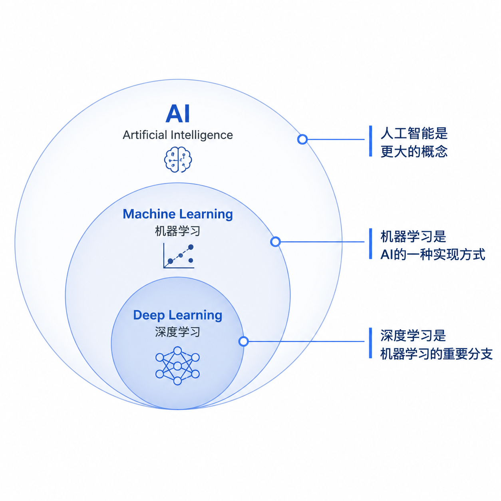
即人工智能可以通过人类编写规则实现，也可以通过机器学习实现，而深度学习又是机器学习中的一个重要分支。
事实上，我们日常生活中早就接触了大量 AI，只是很多时候没有意识到。
打开手机使用人脸解锁时，系统需要判断摄像头中的人是不是你；使用地图导航时，系统可能会结合道路信息预测路线和到达时间；购物平台会根据过去的浏览和购买行为推荐商品；邮箱会自动识别垃圾邮件；短视频平台也会不断判断你可能喜欢什么内容。
这些系统和今天的大语言模型看起来完全不同，但从更大的范围来看，它们都在尝试完成同一件事情：让计算机完成过去很难依靠固定程序完成的“智能判断”。
不过，早期的 AI 并不是一开始就会学习。
早期非常重要的一条技术路线叫作符号人工智能（Symbolic AI）。它的思路其实很好理解：既然人类知道怎么解决问题，那就把人类的知识和规则写进计算机。
例如，我们想让计算机判断一个人是否可以进入某个场所，可以写：如果年龄 ≥ 18 岁，则允许进入。
如果规则稍微复杂一些，也可以继续增加条件。问题是，真实世界远没有这么简单。
假设我们希望机器能够识别垃圾邮件，需要写多少条规则？出现“免费”算垃圾邮件吗？显然不一定。出现“中奖”呢？可能性很高，但也不能百分之百确定。如果有人故意把“免费”写成“免 费”，规则又该怎么处理？
现实中的情况越来越多，规则上还会叠加规则。最后人们会发现一个非常麻烦的问题：人类很难把真实世界中的所有规律全部写出来。既然规则写不完，一个很自然的想法出现了：能不能不告诉机器具体规则，而是让机器自己从数据里面把规律找出来？
这就开始进入机器学习的世界。
Machine Learning
Machine Learning，也就是机器学习，是人工智能中非常重要的一条技术路线。
根据我们上面的介绍，我们已经知道了，我们的目的是让机器自己学习。我们会给机器大量的数据，让机器从数据中寻找规律，从而得到一个可以进行预测的模型。
举一个简单的例子。假设我们希望做一个系统，判断一封邮件是不是垃圾邮件。
我们可以准备很多历史邮件，并且告诉机器：这封是垃圾邮件。这封不是垃圾邮件。这封是垃圾邮件。这封也不是。
机器不断观察这些数据，慢慢调整内部参数，试图找到“什么样的邮件更可能是垃圾邮件”的规律。于是，当一封过去从来没有见过的新邮件出现时，模型也可以根据自己学习到的规律给出判断。这就是机器学习非常重要的一个思想：我们不再试图手工写出所有规则，而是让机器通过数据学习规则。
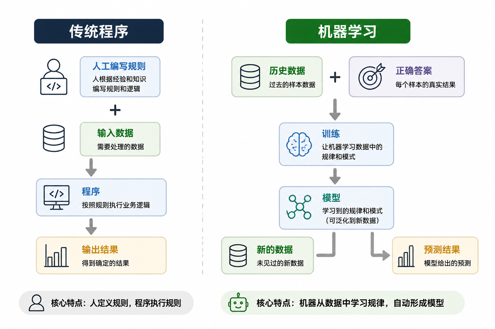
机器学习最终训练出来的东西通常被称为模型（Model）。
可以暂时把模型理解成一个经过大量数据学习以后形成的“规律集合”。它接收到一个输入，然后根据过去学习到的规律产生一个输出。实际上，模型就是一种函数。
当然，现实中的机器学习远比这个描述复杂。机器学习还可以分成监督学习、无监督学习、强化学习等不同方向，也存在决策树、支持向量机、线性模型等大量算法。不过在刚开始理解 AI 时，不需要立刻记住这些概念。
但新的问题很快又出现了。对于房价、销量、用户是否会购买商品这样的结构化问题，很多传统机器学习方法已经表现得很好。可是，如果面对的是一张图片、一段语音或者一篇文章呢？
一张看似普通的图片，背后可能包含几十万甚至几百万个像素。人类很难通过构造样本来告诉机器什么是猫，例如原本的图片是一只猫，可能我们可以变成原本像素的一半，但是这张图片照样是一只猫。
人们需要一种能够从更加复杂的数据中，自动学习出更加复杂特征的方法。这就是深度学习开始展现价值的地方。
Deep Learning
Deep Learning，也就是深度学习，本质上仍然属于机器学习。
它并不是完全推翻机器学习之后出现的一套新东西，而是机器学习中的一个非常重要的分支。深度学习最核心的技术基础之一，就是神经网络（Neural Network）。
神经网络的灵感在一定程度上来自人类神经系统，但今天实际使用的人工神经网络，本质上仍然是一套数学计算模型。对于初学者来说，没有必要一开始就深入它背后的数学公式，可以先抓住一个非常重要的特点：它会通过很多层计算，逐渐把原始数据转换成更加有意义的表示。
例如，我们让一个神经网络识别猫。最开始输入给模型的并不是耳朵,眼睛,胡须这些已经整理好的概念，而只是一堆图片像素。
经过前面的网络层以后，模型可能逐渐学习到一些简单特征，例如边缘和方向；继续经过更多层以后，这些简单特征又可能组合成更复杂的形状；再往后，则可能形成与眼睛、耳朵、脸部轮廓等更加抽象的模式有关的表示。
最后，模型再根据这些信息判断：这张图片有多大的概率是一只猫。
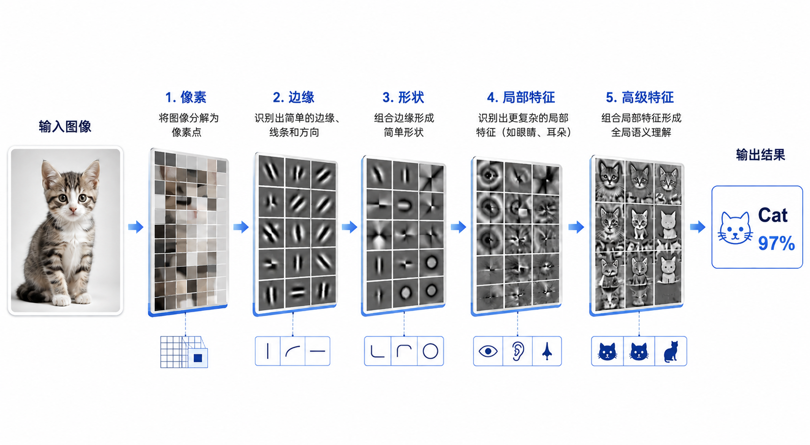
这也是Deep这个词非常直观的一层含义——网络中拥有多个处理层，信息会经过一层又一层的转换。这些层内部存在大量可以调整的参数。
模型刚开始训练的时候，这些参数并不知道应该是多少，所以预测往往非常糟糕。模型需要先进行预测，再把预测结果和正确答案进行比较。如果发现错了，就调整内部参数，然后再次尝试。预测、计算错误、调整参数。再预测，再调整。
这个过程重复成千上万甚至更多次以后，模型逐渐找到一组合适的参数，让预测结果越来越准确。因此，从一个非常简化的角度来说，所谓训练模型，其实就是:不断寻找一组更加合适的参数。
不过，神经网络这个想法并不是最近才出现的。
它的发展其实经历了非常漫长的过程，期间甚至出现过多次低谷。早期的神经网络能力有限，例如早期的感知机无法解决 XOR 这类线性不可分问题；后来即使出现了更加复杂的多层网络，训练深层神经网络仍然面临很多困难。更现实的问题是，当时的条件也不成熟。
深度学习非常“贪心”。它往往需要大量数据，也需要大量计算。几十年前，互联网还没有产生今天这样规模庞大的图片、文本、视频、代码和语音数据；计算机性能也远远达不到今天的水平。很多理论上可以做的事情，实际训练起来可能非常困难。
所以，深度学习并不是某一天突然被发明出来，然后立刻统治了 AI。真正让它在近十几年迅速发展起来的，可以粗略归结为三个因素同时成熟：数据、算力和模型。
数据
互联网的发展产生了规模空前的数据。文字、图片、语音、视频、代码……这些数据逐渐成为训练深度学习模型的重要燃料。
算力
尤其是 GPU 等计算硬件的发展，让过去需要极长时间才能完成的大规模计算逐渐变得可行。神经网络训练过程中包含大量矩阵运算，而 GPU 非常适合进行大量并行计算，因此计算硬件的发展极大推动了深度学习。
模型架构不断进步
CNN 在计算机视觉领域产生了重要影响，RNN、LSTM 曾经被大量用于处理语言和时间序列问题。不同的模型架构不断推动深度学习向前发展。
而在这条发展路线中，2017 年出现了一个后来对生成式 AI 产生巨大影响的模型架构：Transformer。它不仅改变了自然语言处理的发展方向，也逐渐成为后来大语言模型的重要技术基础。
如果说前面的内容回答了机器为什么能够从数据中学习，那么从 Transformer 开始，我们要继续回答另一个问题：为什么机器逐渐拥有了理解和生成语言的能力？
这也是我们下一部分要讨论的内容。
Large Language Model
在上一部分的最后，我们提到了 Transformer。
从 AI 到机器学习，再到深度学习，人们一直在尝试解决一个问题：怎样让机器从越来越复杂的数据中学习规律？
图片可以通过神经网络识别，语音也可以被转换和处理，那么对于人类每天都在使用的语言呢？如果我们希望机器真正处理一段文章，它不仅需要看到一个个词，还要理解这些词之间的关系。
例如：小明没有把电脑放进书包，因为它太大了。
这里的“它”究竟指的是电脑，还是书包？
对于人来说，根据上下文进行判断几乎是下意识的事情。但对计算机而言，这并没有那么简单。语言中的一个词是什么意思，很多时候并不能只看这个词本身，而要结合它前后的内容。
而 Transformer 的出现，正是在很大程度上改变了机器处理语言的方式。
Transformer
2017 年，Google 的研究人员发表了一篇后来影响非常大的论文——《Attention Is All You Need》。
这篇论文提出了一种新的神经网络架构，叫做Transformer。
如果只是初步认识 Transformer，我们不需要马上研究其中复杂的数学公式。可以先记住 Transformer 中一个非常重要的概念：Attention，也就是注意力机制。
所谓 Attention，可以简单理解成：当模型处理当前信息时，动态判断上下文中哪些信息更加重要。
还是用一个简单的句子：小明把苹果放在桌子上，因为它很重。
当模型处理“它”这个词的时候，不能简单地只看它前面的一个词，而需要观察整个上下文：
“小明”，“苹果”，“桌子”和“它”有什么关系？
然后给不同的信息分配不同程度的注意力。这也是 Attention 最核心的思想之一。它不是简单按照距离近就是重要、距离远就是不重要的方式处理语言，而是让模型学习：当前这个位置，应该重点关注上下文中的哪些内容。
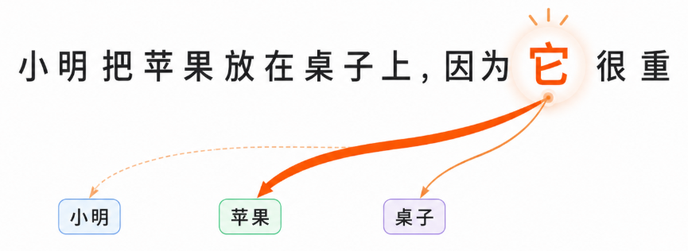
如图我们就可以看到，我们的注意力更多的在苹果上，这与我们的常识一致，我们也想让模型拥有这种能力。
不过，如果 Transformer 的意义仅仅是更会理解一句话，它可能还不会产生今天这么大的影响。真正重要的是，它同时解决或者改善了当时深度学习处理语言时的一些关键问题。
在 Transformer 出现之前，处理文本等序列数据时，经常会使用 RNN、LSTM 等模型。这些模型有一个比较直观的特点:它们倾向于按照顺序处理信息。
比如一句话：今天北京的天气非常不错。
模型可能需要从“今天”开始，一个词一个词向后处理。这种思路本身没有问题，但当数据规模越来越大、文本越来越长以后，就会带来一些麻烦。
训练速度
如果大量计算必须按照顺序完成，前面的内容没有处理完，后面的计算就很难完全开始，那么即使我们拥有很多 GPU，也很难充分发挥并行计算能力。
而 Transformer 的一个巨大优势，就是它能够更加高效地进行并行计算。这件事情看起来好像只是“训练快了一些”，但实际影响非常大。因为如果模型能够有效使用大量 GPU，就意味着：可以使用更多的数据。可以训练更多的参数。可以进行更大规模的计算。于是，模型规模开始不断扩大。
远处信息
与此同时，Transformer 的 Attention 机制也非常擅长学习文本中相隔很远的信息之间的关系。一句话可能只有十几个字，这个优势还不明显。但如果模型处理的是一篇文章、一段代码，甚至更长的上下文，那么前面出现的信息会不会影响后面的内容就会变得非常重要。
因此，Transformer 最终表现出了几个非常适合大模型时代的特点：能够进行大规模并行训练、能够学习复杂的上下文关系，并且具有很强的规模扩展能力。
这三个特点恰好碰上了我们上一部分提到的另外两个条件：数据与算力。数据、算力以及 Transformer 这样的模型架构逐渐结合起来，一条非常重要的技术路线开始变得越来越清晰：使用更多的数据、更大的模型、更强的计算能力进行训练，模型的能力也会不断提升。
今天我们熟悉的大语言模型，就建立在这条路线之上。
LLM 是什么
LLM 的全称是 Large Language Model，中文通常翻译成：大语言模型。
如果给出一个比较简单的解释，LLM 是通过大规模数据训练出来，能够处理、理解和生成语言等内容的大型神经网络模型。
如果你使用过 ChatGPT、Claude、Gemini、DeepSeek 或者 Kimi，那么其实已经和建立在大语言模型之上的产品打过交道了。所以 LLM 并不是一个离普通人非常遥远的实验室技术。你可能已经每天都在使用它。
有一个非常容易产生的误解：LLM 是不是像人一样，把大量知识完整地记在脑子里面，然后用户提问时，从记忆中找到正确答案？实际上并不是这样。理解 LLM，可以先从一个非常重要的概念开始：预测。
假设有一句话：今天天气很好，我们一起去公园____。
如果让你填写最后一个词，你可能会想到：“散步”，“玩”，“走走”。 为什么？
因为根据前面的内容，你能够判断接下来什么内容比较合理。LLM 在最底层做的事情，也可以非常粗略地理解成类似的过程：根据已经出现的内容，预测接下来最可能出现什么。
只不过，大语言模型进行了极其庞大的训练，它学习到的语言规律和模式远远超过这个简单例子。而且模型并不是直接看到我们所理解的句子。
当我们向模型输入：帮我写一个 Python 快速排序。
文本首先会被拆分成一些更小的单位，这些单位通常称为：Token。
Token 不一定刚好是一个汉字，也不一定刚好是一个英文单词。它是模型处理文本时使用的基本单位之一。接下来，这些 Token 会被转换成模型能够计算的数字表示，然后经过 Transformer 中大量的计算层。
最终，模型会预测：接下来哪个 Token 出现的概率最高？选择一个以后，再继续预测下一个。一个接一个。最终，我们看到的就是一整段完整的回答。
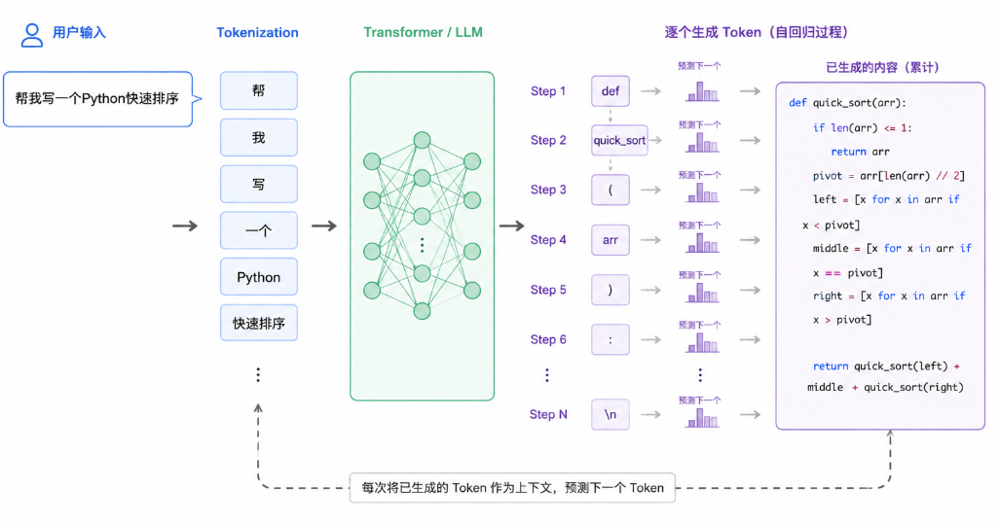
当然，这只是非常简化的解释。现代 LLM 的能力已经远远超出了简单的“文字接龙”。通过规模庞大的训练，它可以在模型参数中学习到大量语言结构、知识模式、代码规律、逻辑关系等信息。
这就涉及另一个经常看到的词：Parameters，也就是模型参数。
在前面的深度学习部分，我们提到过：训练神经网络，本质上是在不断调整大量参数，让模型的预测结果越来越好。LLM 也是如此。只不过，它的参数规模可能非常庞大。
在训练过程中，模型不断阅读大量数据，不断进行预测，然后不断根据预测结果调整参数。训练完成以后，这些参数中就蕴含了模型从训练数据中学习到的大量模式。
所以我们可以把一次最基本的 LLM 使用过程粗略理解成：
Training Data -> 训练 -> Model Parameters -> 用户输入 Prompt -> 模型结合当前的Context进行计算回答 -> 生成结果
这里又出现了两个在之后会经常遇到的词。
Prompt(提示词)
简单来说，就是你提供给模型的输入和指令。例如：“帮我总结下面这篇文章。”这就是一个非常简单的 Prompt。
Context(上下文)
模型在生成当前答案时，能够看到并参与当前计算的信息，可以粗略地理解为它当前的 Context。
比如你先告诉 AI：我叫小明，我正在学习 Python。
过了一会儿再问：我正在学习什么语言？
模型能够回答“Python”，并不是因为它重新训练了一遍，也不是因为模型参数发生了改变。而是因为：前面的信息仍然存在于当前上下文中。这点非常重要，因为后面的很多 LLM 增强技术，本质上都在想办法做一件事情：在模型回答之前，把更加有用的信息放进它当前能够看到的 Context。
理解这一点以后，我们就能理解为什么大语言模型虽然已经非常强大，却仍然存在一些非常明显的问题。比如你问一个模型：“今天刚刚发布的某项政策具体说了什么？”如果这个模型没有联网，也没有获得这份最新政策，它凭什么知道？
再比如你的公司内部刚刚发布了一份只有员工能看到的文档。你问模型：“我们公司今年新的报销政策是什么？”模型在训练的时候压根没有看到过这份文件，它当然不可能天然知道。
还有一种更加麻烦的情况。当模型不知道的时候，它不一定会像传统数据库一样明确返回：“没有查询到数据。”
由于它的核心任务仍然是根据当前信息继续生成合理的内容，所以有时候模型可能生成一段，听起来非常合理，但实际上是错误的答案。这就是使用 LLM 时经常会遇到的一个词：Hallucination，也就是幻觉。
所以，LLM 虽然非常强大，却天然存在一些需要面对的问题：知识可能存在截止时间。无法天然知道企业的私有数据。可能没有最新的实时信息。模型参数中的知识并不等同于一个可以精确查询的数据库。而且还可能产生幻觉。
于是一个新的问题出现了：如果模型自己不知道，我们能不能在它回答之前，先帮它把正确的资料找出来？答案就是 RAG。
RAG
RAG 的全称是Retrieval-Augmented Generation。通常翻译为检索增强生成。
这个名字第一次看到可能有点复杂，但是它的核心思路其实非常简单。可以把普通 LLM 想象成参加一次闭卷考试。模型只能依靠训练时已经学习到的信息，以及题目中提供的内容回答问题。
而 RAG 做了一件事情:在回答问题之前，先允许模型查资料。因此，RAG 经常可以被形象地理解成：给 LLM 一场“开卷考试”。它并不是要求模型把世界上所有信息都记在模型参数里。
而是在真正回答问题之前：先从外部知识库中找到与问题有关的资料，然后把这些资料交给 LLM，让模型基于这些资料生成答案。
所以如果极度简化：RAG = Retrieval + LLM Generation 也就是先检索，再生成。
举一个更真实的例子。假设一家公司内部有：1000 份 PDF。500 份内部文档。10000 条知识库记录。大量产品说明和规章制度。现在员工问：“我们公司最新的退款政策是什么？”
RAG 的做法是：先根据用户的问题，从公司的知识库中找到最相关的几段内容。比如检索到：《2026 年退款政策》第三条……
然后把这些内容和用户的问题一起提供给 LLM。这时候，模型真正看到的内容可能变成：
根据下面提供的公司资料回答用户问题。
公司资料：……
用户问题：我们公司最新的退款政策是什么？然后 LLM 再生成最终答案。注意这里发生了一件很关键的事情：我们并没有重新训练 LLM。模型参数也没有因为公司新增了一份文档就发生变化。我们只是：在模型回答之前，把需要的信息放进了它的 Context。这也是理解 RAG 最重要的一点。
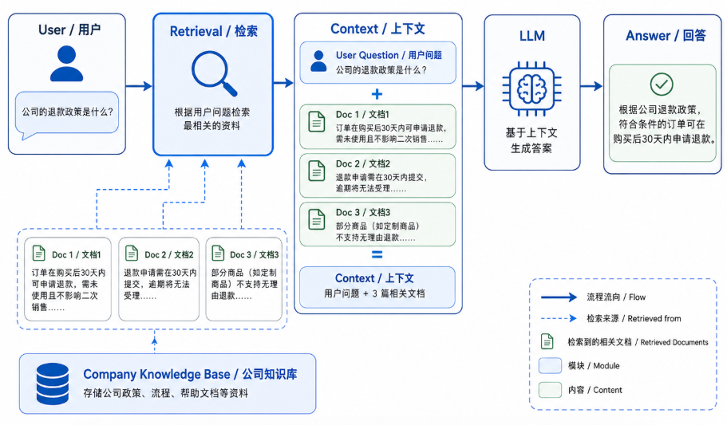
如图就是一个简单的演示
不过这里又会产生一个问题。公司可能有上万份文档。难道每次用户问一个问题，都把一万份文档全部塞给 LLM 吗？显然不现实。
一方面成本会非常高，另一方面模型能够一次处理的上下文也存在一定范围。更重要的是，大量无关资料反而可能干扰模型找到真正重要的信息。所以 RAG 的关键并不是：“把所有知识给 LLM。”, 而是：“只找到与当前问题最相关的知识。”
这就需要一个检索过程。例如公司有一本 300 页的产品手册。通常不会直接把整个 300 页文档当成一个整体，而是先把它拆成许多较小的内容片段。这个过程通常叫：Chunking，分块。
例如，我们可以把一份完整的PDF文件，分成几个Chunk。
有了这些文本片段以后，还需要解决另一个问题：计算机怎么判断用户的问题和哪一段文字语义最接近？
这里就会用到：Embedding。这个概念可以先简单的理解成：把文本等信息转换成能够表达其语义特征的一组数字，也就是向量。
例如“苹果手机”和“iPhone”从文字上看并不相同。但从语义来看，它们非常接近。一个好的 Embedding 模型，会尝试让这种语义上的相似关系也体现在向量空间中。
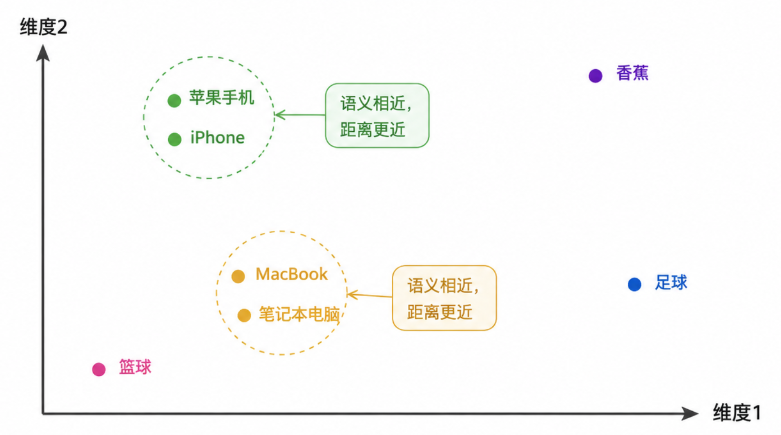
我们可以简单的用该图片简单的理解一下语义空间。实际上，我们一般的语义空间都不止两个维度。
于是，一套比较典型的 RAG 知识入库流程就形成了：
Document -> Chunking -> Embedding -> Vector Database
所谓 Vector Database，也就是向量数据库。它的一个重要作用，就是帮助我们保存和高效搜索大量向量。
当用户真正提问的时，用户的问题同样会经过 Embedding。然后系统会在大量文档向量中寻找：哪些内容和这个问题最相似？
负责寻找相关内容的部分通常可以称为Retriever(检索器)。
于是我们可以理解RAG的一个完整流程为：
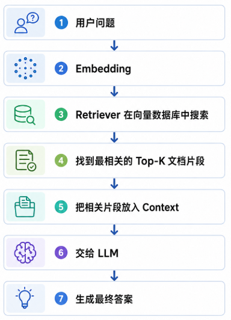
这里的 Top-K 也很好理解。假设 K = 5，就是：找到最相关的 5 个内容片段。
我们以上说的就是最基础的RAG。RAG 非常适合处理一类问题：模型本身“不应该提前知道”，或者“不可能一直记住”的知识。
例如企业内部 Wiki,公司产品文档,法律法规,员工手册,不断更新的政策,内部数据库中的资料,或者一些频繁变化的信息。
例如：“根据公司最新员工手册，试用期可以请多少天病假？”
对于这种问题，与其希望模型“凭记忆回答”，更合理的方式往往是：先找到员工手册中的相关内容，再让模型根据文件回答。
不过需要注意，RAG 并不等于绝对准确。 因为它只是改变了信息进入 LLM 的方式。
如果 Retriever 一开始就找错了文档，后面的 LLM 即使非常认真地根据资料回答，最后仍然可能得到错误结果。
所以一个 RAG 系统最终表现得好不好，除了 LLM 本身以外，还和很多事情有关，例如文档怎么切分，Embedding 模型是否合适，Retriever 能不能找到真正相关的内容，搜索结果怎么排序，Context 中放多少资料，资料之间有没有互相冲突等等。
这些问题已经开始进入更加具体的 RAG 工程领域，这里暂时不继续展开。
对于我们现在建立 AI 基础认知来说，更重要的是理解 RAG 带来的思路变化。
最开始，我们主要依赖LLM 参数中的知识。后来我们发现，模型不需要把所有信息都提前记住。我们可以在需要的时候从外部世界找到信息，再把信息交给模型。
于是，一个原本相对封闭的 LLM，开始拥有了利用外部知识的能力。但是到现在，AI还只是给我们信息，执行还是要我们人类亲自来动手。
但如果我们希望 AI 不只是回答问题，而是真正开始完成任务——例如查询系统、修改文件、调用程序、操作软件，甚至根据执行结果继续决定下一步应该做什么。那么仅仅有一个 LLM 和 RAG，就还不够了。
因此我们后面将开始帮助你理解Agent。
LLM还能如何增强？(可省略)
讲完 RAG 以后，很容易产生一个印象。只要 LLM 不够好，就给它加一个 RAG。
但实际上，RAG 只是增强 LLM 的其中一种方式。不同的问题，适合使用的增强方法并不相同。
例如，我们前面提到 RAG 非常适合解决：模型“不知道某些外部知识”的问题。公司内部有一份最新文档，模型没见过。某项政策刚刚更新，模型训练时还不存在。产品说明书经常发生变化，也没有必要每更新一次文档就重新训练一次模型。对于这些情况，我们可以先检索资料，再把资料放入 Context。但是，如果真正的问题不是“模型不知道”，而是：“模型回答问题的方式不是我想要的。”事情就有些不同了。
比如一家公司的客服机器人，每次回答都需要遵循非常固定的表达方式；又或者我们希望模型更加擅长某一种特殊任务，让它长期学习大量特定格式的输入和输出。
这时候，经常会遇到另一种方法：Fine-tuning，也就是微调。 可以简单的理解为在一个已经训练好的模型基础上，再使用特定的数据继续训练，让模型进一步适应某一种任务或行为模式。
可以用一个非常简单的例子理解。假设一个学生要参加考试。
RAG 更像：给学生一本可以随时查阅的参考资料。当遇到不知道的问题时，他先翻书，然后根据书里的内容回答。
Fine-tuning 则更像：在考试之前，再对这个学生进行一段时间的专项训练。 你不断给他看某一类题目，告诉他应该如何回答。久而久之，他处理这种问题的方式就会发生变化。
一个最大的区别就是，是否对模型进行进一步训练。真实项目中，RAG 和 Fine-tuning 也并不是二选一。有些系统既会使用 Fine-tuning 调整模型处理某类任务的能力，又会使用 RAG 为模型提供最新知识。
除了 RAG 和 Fine-tuning，还有一种增强方式看起来更加直接：给模型更长的 Context。前面我们已经介绍过Context。
模型在生成当前答案时，能够看到并参与计算的信息，可以粗略理解成它当前的上下文。想对于我们之前RAG的分块上传，但还有一种更加直接的方式：把整份文件直接交给 LLM。
如果模型的 Context Window 足够大，它就有可能一次看到整份文件，然后直接根据其中的内容回答问题。其中的Context Window，上下文窗口。可以把它理解成模型一次能够处理多少上下文信息。
不同模型能够接受的上下文长度并不完全相同。随着大语言模型不断发展，模型能够处理的 Context 也变得越来越长。这意味着，以前一些必须经过复杂检索才能完成的问题，现在可能直接把大量资料交给模型就可以解决。
但这里也不能简单地认为：Context 越长，就完全不需要 RAG。因为实际应用中，我们面对的资料可能不是一本几十页的文件，而是十万份文档。几百万条知识库内容。公司多年来积累的邮件、产品文档和内部记录。甚至每天还在不断增加的数据。
这就像去图书馆找一个问题的答案。如果整个图书馆只有一本书，直接把整本书拿出来阅读可能没有问题。但如果图书馆中有几十万本书，更合理的做法仍然是：先找到最相关的几本，再阅读真正需要的内容。
因此，Long Context 和 RAG 也并不是简单的替代关系。很多时候，它们可以互相配合。RAG 负责从大量资料中缩小范围。更长的 Context 则让模型一次能够阅读更多相关信息，从而获得更加完整的上下文。
除了这些方法，我们前面其实还一直在使用一种最容易被忽略的增强方式：Prompt Engineering。
同一个模型，在不同 Prompt 下，得到的结果可能存在很大差别。
例如只是问：帮我分析一下这份报告。
和告诉它：阅读下面的报告，从市场规模、竞争格局、主要风险三个角度进行分析。不要补充报告中不存在的数据，并在最后列出三个最重要的结论。
我们显然可以知道，第二种问法出来的结果显然更贴合我们想要的。
Prompt Engineering 的核心并不是寻找某一句神奇咒语，而是：尽可能清楚地告诉模型当前任务是什么，以及希望它如何完成任务。
理解这些方法以后，我们会发现一个很有意思的变化：最开始，人们主要关心的是模型本身有多强？参数有多少？训练数据有多少？模型规模有多大？
但随着 LLM 真正进入应用，问题逐渐变成：怎样把模型放进一个系统里，让它更加稳定地完成我们真正需要的任务？
RAG、Prompt、Context、Fine-tuning 都是在从不同方向解决这个问题。不过到目前为止，我们讨论的核心仍然是：如何让 LLM 更好地“回答”。
接下来，如果我们的要求进一步提高，不仅希望它告诉我们答案，而是希望它能够根据目标主动使用工具、获得外部反馈、继续判断下一步，并最终完成一个任务，那么我们就会开始进入另一个重要的领域：Agent。
Agent
此处，我们不再只希望模型告诉我我们应该做什么，而是开始希望它真正的去做。这也是理解 Agent 的起点。
Tool
要让 LLM 真正和外部世界产生交互，首先需要给它一些能够使用的能力。这些能力通常被称为：Tool，也就是工具。
例如一个天气工具get_weather(city)，一个搜索工具search_web(query)，一个发送邮件的工具send_email(to, subject, content)又或者查询数据库，执行Python文件，操作浏览器等。这些都可以成为 LLM 能够调用的 Tool。
可以用一个很简单的比喻理解：LLM 像大脑，Tool 像手和脚。
假如我们想知道上海今天的天气，
大脑可以思考：“为了回答这个问题，我需要先知道上海今天的天气。”但是仅仅“想到”这件事没有用。它还需要真正调用get_weather("上海")。获得今天上海的天气，假设上海，26℃，有阵雨。
然后再根据这个结果告诉用户，今天上海可能下雨，建议带伞。于是，我们就完成了一次简单的 Tool Calling 。
这里有一个很重要的地方：真正查询天气的不是 LLM。真正完成查询的是外部程序。
LLM 做的事情更接近：判断现在应该使用哪个工具，以及应该给工具什么参数。 工具执行完成以后，再把结果交还给模型。
这也是为什么 Tool Calling 是从 LLM 走向 Agent 时非常关键的一步。现代 Agent 系统通常会把工具描述得非常明确，包括工具名称、用途、输入参数和输出结构，帮助模型正确决定什么时候应该使用它。
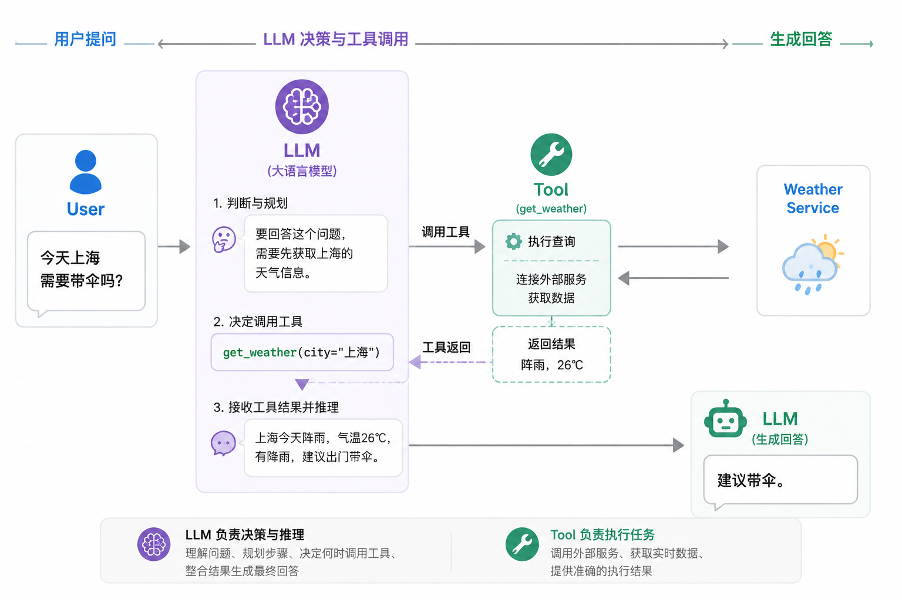
但是，我们要如何让LLM与我们的Tool链接呢？
API
API 的全称是：Application Programming Interface，应用程序编程接口。
API 并不是 AI 时代才出现的东西。传统软件之间已经通过 API 连接了很多年。假设我们开发一个天气 App。这个 App 自己可能并不知道天气，而是向某个天气服务发送请求：请告诉我上海今天的天气。天气服务返回：26℃，阵雨。这就是一种典型的软件接口调用。
可以把 API 粗略理解成：一个软件向另一个软件开放能力的接口。
而Tool 更偏向于我们怎样把某种能力提供给 LLM 使用。
在很多情况下Tool 的背后可能调用 API。但 Tool 不一定就是 API。一个 Tool 也可能运行本地代码。可能读取一个 Excel 文件也可能执行 Shell 命令。
我们可以简单的记住：API 更像软件与软件之间的接口。Tool 更像暴露给模型使用的一种能力。
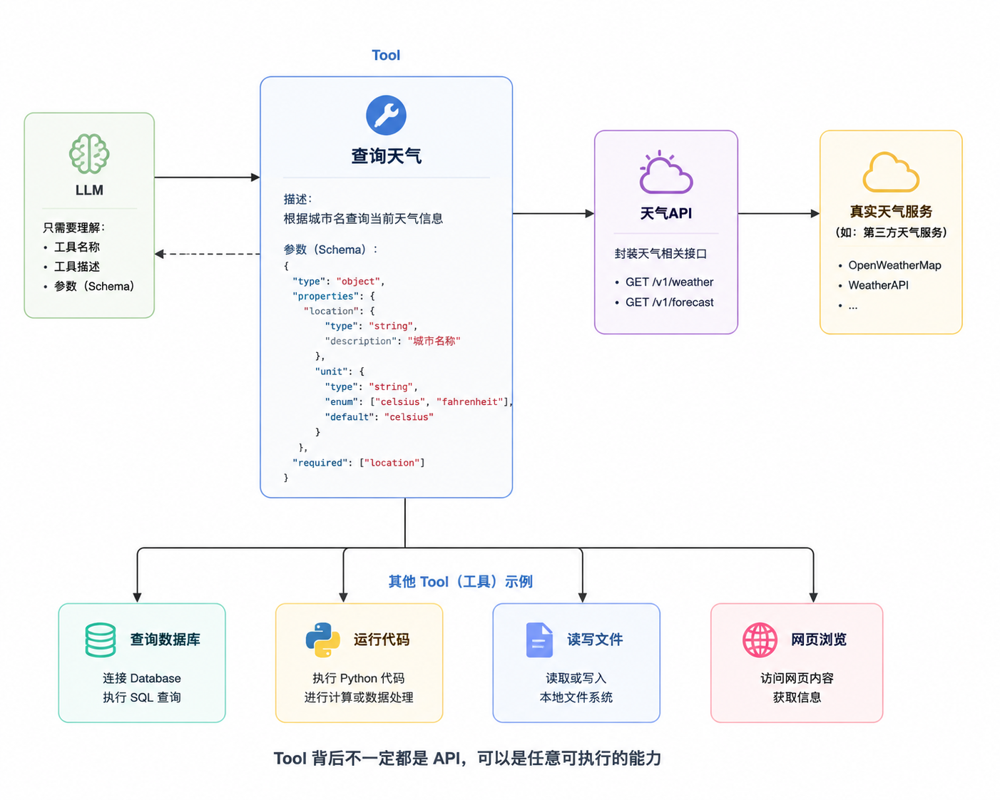
当 Agent 只有两三个 Tool 的时候，这套方式看起来并不复杂。但假设未来一个 AI 应用需要同时接入：GitHub,Google Drive,Slack等等，几十个甚至上百个系统。新的问题就出现了。如果每一个系统都使用自己完全不同的连接方式，那么开发者需要不断编写不同的适配代码。
于是，人们开始希望：AI 与外部工具之间，能不能拥有一种更加标准化的连接方式？这就要提到 MCP。
MCP
MCP 的全称是：Model Context Protocol。
可以简单理解成一种让 AI 应用更加标准化地连接外部工具和数据源的开放协议。
这里首先需要明确：MCP 不是 Agent，也不是新的LLM。它更接近于AI 系统连接外部世界的一套通用接口规范。
传统情况下，我们可能分别进行AI Application → GitHub API；AI Application → Database API等等。每接入一个新系统，都可能需要编写一套不同的连接逻辑。
MCP 的官方架构采用 Host、Client、Server 等角色；Server 可以向客户端暴露 Tools、Resources、Prompts 等能力。Tools 负责提供可执行动作，Resources 可以提供文件、数据库信息等上下文数据，而 Prompts 可以提供预定义的交互模板。
比如一个 GitHub MCP Server 可以提供：读取 Issue，创建 Pull Request，查询 Repository等等。对于上层 AI 应用来说，它们可以通过更一致的方式发现并使用这些能力。
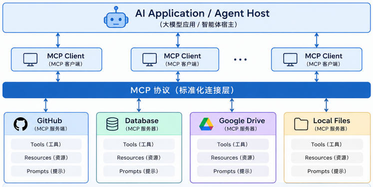
所以，可以把我们目前讲过的三个概念放在一起：
- API:是很多软件系统本身提供能力的接口。
- Tool:是 AI 模型能够理解和调用的能力。
- MCP:则是在 AI 应用和大量外部能力之间，提供一种更加标准化的连接方式。
很多 MCP Server 的背后，仍然可能是在调用传统 API。它解决的更多是AI 应用如何更加统一地发现、描述和连接这些能力。 不过，拥有很多 Tool 并不自动意味着我们已经拥有了一个真正好用的 Agent。
如果一个任务包含十几个步骤：到底先做哪一步？下一步应该固定执行，还是根据结果动态变化？失败以后怎么办？这就涉及另一个概念。
Workflow
Workflow，也就是工作流。
这个概念其实也并不属于 AI。传统的软件自动化中已经存在了很长时间。
假设我们每天都需要生成一份市场日报。可以提前规划：
- 获取新闻
- 筛选与公司相关的新闻
- 总结新闻
- 生成日报
- 发送到指定邮箱
这就是一个很典型的 Workflow。它最大的特点在于执行路径主要是提前规定好的。如果程序写的是：A → B → C → D，正常情况下，它就按照这个顺序执行。
Anthropic 在讨论 Agent 系统时也专门区分了 Workflow 和 Agent：Workflow 主要由预定义代码路径编排模型和工具，而 Agent 则让模型动态决定自己的执行过程以及工具使用方式。
在Workflow 中，通常主要是程序员提前决定。至于Agent，我们后面再说。
Workflow 往往更简单、更稳定，也更容易预测。如果任务本身有大量不确定性，需要根据中间结果不断调整执行路径，Agent 才更加有价值。
因此，在真实系统里经常是Workflow与Agent互相配合。一部分确定的流程由 Workflow 控制。真正需要判断的部分，再交给模型。
这也是 Agent 工程中非常重要的一条原则：能确定的事情尽量确定，真正需要智能判断的地方才交给模型。简单就能实现才是最完美的。
但是，当任务开始变长以后，又会遇到另一个问题。它怎么知道自己前面做了什么？
Memory
Memory，也就是记忆。
假设你告诉一个 AI：“以后我写技术文章时，尽量面向初学者，不要使用太多数学公式。”
今天它记住了。第二天你又让它写一篇文章，如果它能够继续记得这个偏好，这就是一种 Memory 的体现。
Agent 需要 Memory，还有一个更加重要的原因：复杂任务可能不是一次模型调用就能完成的。
Agent需要记录，已经完成了什么，还剩下什么，之前做过哪些决定，用户有什么偏好，哪些信息之后可能还会用到。
不过 Memory 有一个很常见的误解：Memory 并不是把所有历史信息永远塞进 Prompt。
这样做不仅会越来越昂贵，也会让 Context 中出现大量不重要的信息。实际系统中更可能进行：选择，摘要与压缩，存储，检索。在真正需要的时候，再把有用的信息重新放进 Context。
这里会发现，它与之前的 RAG 在思路上有一些相似。RAG 主要回答：“我应该去哪里找知识？”
而Memory 更偏向：“关于这个用户和这个任务，我应该记住什么？”
需要特别区分的还有，Memory 和 State 并不完全是一回事。State，更接近一个任务当前的运行状态。例如，当前处于第四步，以及调用了xxx工具三次，等待用户确定等等。Memory 则更强调哪些过去的信息值得在之后重新使用。
很多 Agent 系统会同时管理 Context、State 和 Memory，而不是只拥有一个简单的“聊天记录”。
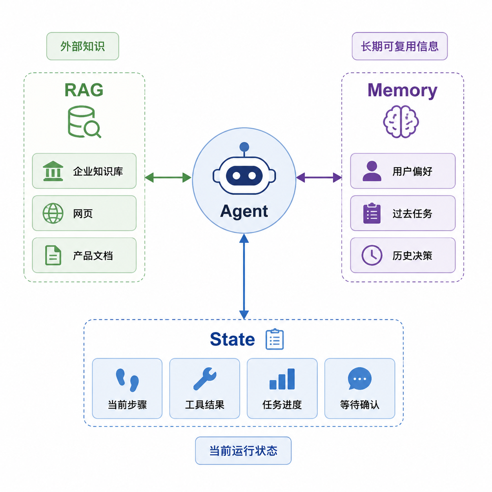
随着 Agent 拥有越来越多工具，问题也开始变得更加严肃。因为以前 LLM 说错一句话，也许只是回答错误。现在，它可能真的会执行错误操作。
Guardrails
假设一个普通 LLM 错误地告诉你：“这个文件应该删除。” 你可以选择不听，但如果 Agent 自己拥有文件删除权限，并且直接执行了删除操作，问题就完全不同了。
更极端一点。Agent 可能拥有发生邮件，修改数据库等权限，这些都意味着，Agent 的能力越强，错误的代价也越高。
所以生产环境中的 Agent 必须拥有 Guardrails，也就是护栏或者安全控制。Guardrails 的目的不是让 Agent 什么都不能做。而是明确它能做到哪里。
例如：
- 读取文件 -> 自动执行
- 发送邮件 -> 需要确认
- 删除数据库 -> 禁止
- 支付10000元 -> 人工审批
- 修改Production -> 人工批准
这样一来，即使模型做出了错误判断，外围系统也可以阻止它直接造成严重后果。
OpenAI 的 Agent 资料同样强调，现实世界中的 Agent 需要通过权限、确认和多层安全机制限制高风险行为，而不是简单给予模型无限制的执行能力。
这里有一个原则尤其重要：最终权限应该由 Agent 外围的软件系统控制。 例如下图就是一种简单的权限分层示意图
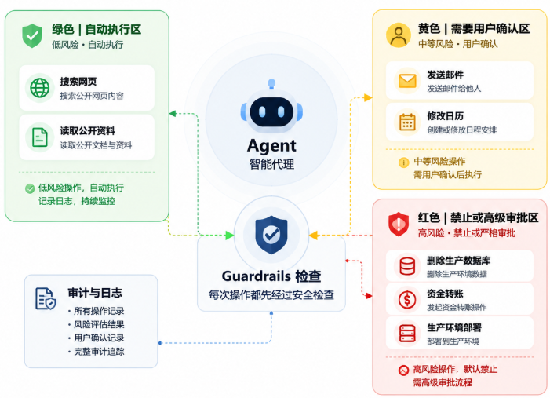
但是，限制 Agent 还不够。当 Agent 出错的时候，我们还必须知道：它到底是怎么错的？
Observability
传统的软件系统需要监控。例如CPU 使用率是多少？接口有没有报错？等等问题。
Agent 同样需要监控。但问题变得更加复杂。假设用户说：帮我调查一下这家公司。
最后 Agent 得到了一个错误结论。到底哪里错了？是第一次搜索关键词错了，还是搜索到了错误网页，还是 Tool 返回了错误结果等等。
甚至可能出现：Agent 连续调用同一个 Tool 20 次，陷入循环。Token 消耗越来越高，最后仍然没有完成任务。如果我们只能看到最终答案：“任务失败。”几乎没有办法排查。例如下图，就是存在这种情况后一些人做出来的梗图：
所以 Agent 系统需要更加完整的：Logging，Tracing，Observability。
可以简单理解成让整个 Agent 的执行过程能够被看见。
我们可能需要看到用户最开始提出了什么任务，调用了多少次模型，模型选择了哪些 Tool…什么时候触发了 Guardrail等等。
Tracing 尤其重要，因为 Agent 往往不是直接从Input就变成了Output这么简单，中间存在需要Tool的调用以及处理可能存在的失败。
只有看完整条执行轨迹，开发者才能真正知道系统发生了什么。当前 Agent 开发平台也越来越把 tracing 和 observability 作为基础能力，而不是额外附加功能。下图就是我们简单生成一个trace。
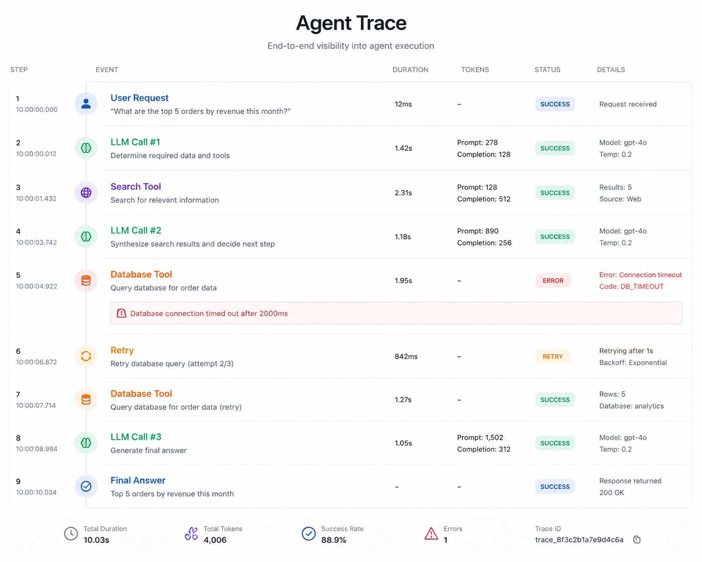
但看得见整个执行过程，并不能回答另一个问题：Agent 最后做得究竟好不好？
Evaluation
Observability 与 Evaluation 是 Agent 工程中两个互补但本质不同的维度。
Observability 关注的是”发生了什么”，它记录 Agent 在整个任务流程中的行为轨迹，例如调用了多少次工具、是否报错、流程是否顺利走完。然而，流程运行正常并不等同于任务完成得好。
Evaluation 回答的是”做得怎么样”，它衡量的是 Agent 的输出质量和任务结果的正确性。
即使一个 Agent 成功生成了一份报告，也可能存在遗漏关键事实、引用错误来源、计算出错或格式不符等问题；同样，一个客服 Agent 可能顺利走完了退款流程，但退款金额错误、问题未真正解决，或违反了公司政策。
因此，Evaluation 需要深入检查任务结果本身，而非仅仅验证流程是否通畅。
由于 Agent 的输出具有不确定性——同一任务执行两次可能走完全不同的工具路径——其评估方式也与传统软件的确定性测试截然不同。
传统软件通常可以验证”输入 1 必须得到输出 2”，但对 Agent 而言，仅检查最终生成的文字是远远不够的。
现代 Agent 的 Evaluation 强调对最终环境状态的验证：如果一个订机票 Agent 声称”预订成功”，评估不应止步于这句话的表述是否正确，而应进一步确认预订系统中是否真的生成了有效的机票记录。
这种从”说了什么”到”真正改变了什么”的评估转向，正是现代 Agent 工程越来越重视 Evaluation 的核心原因。
简而言之，Observability 是排查问题的眼睛，没有它，Agent 出错时难以定位根因；Evaluation 是衡量质量的天平，没有它，团队可能连 Agent 表现不佳都无从察觉。两者缺一不可：Observability 确保我们能看见过程，Evaluation 确保我们能判断结果。
Harness
到这里，我们已经有了很多零件：LLM,Tool,API,MCP,Workflow,Context,Memory,State,Guardrails,Observability以及Evaluation。
这时候就会出现一个很现实的问题，谁来把这些东西真正组织起来？
如果我们只是拿一个 LLM，再给它几个工具定义，还不能自动得到一个能够长期稳定工作的 Agent。
Agent Harness 是围绕大语言模型构建的整套运行环境与软件脚手架，其核心职责是将模型”固定”在可执行、可管理、可监控的系统中，并为其提供完整的外围支撑。
它并非模型本身，也不是单一的工具，而是负责处理模型无法直接完成的工程性事务：包括接收用户消息、管理上下文长度、执行工具调用、处理工具报错、将执行结果回传给模型、控制推理循环的启停、保存和读取状态与记忆、检查权限、处理超时、限制 Token 消耗与成本、记录全链路 Trace，以及支持任务失败后的恢复机制。
可以说，Harness 是 Agent 能够真正运转起来的”底盘”。
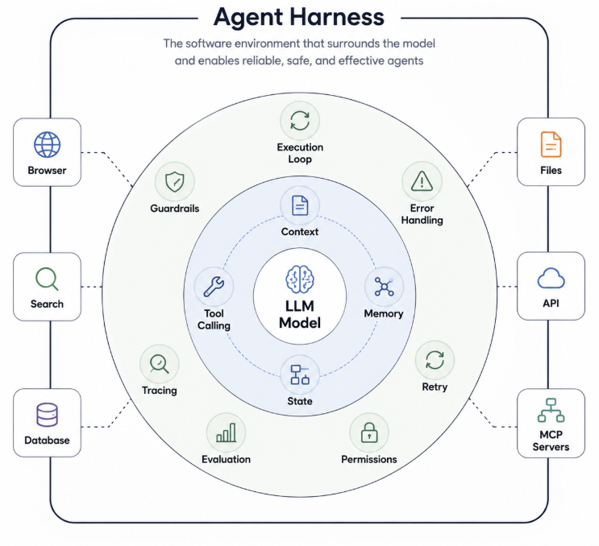
从工程视角看，Agent 的构成可以粗略理解为 Agent ≈ Model + Harness。
裸模型只提供推理与生成的核心能力，而 Harness 赋予模型与环境交互的能力——包括连接外部工具、维护持续状态、执行多步骤任务以及实施安全控制。
例如，当模型决定调用 search_web() 时，Harness 负责定位该工具、执行调用、获取结果、更新当前状态并再次触发模型推理；当模型进一步决定查询数据库时，Harness 会同步校验权限、验证参数合法性、检查预算上限，甚至决定是否需要人工确认。
Google Cloud 对 Agent Harness 的近期定义也将其描述为包围模型的软件环境，负责连接工具、管理记忆和状态、执行多步骤任务并实施安全控制。
这一区分在实际评估中尤为关键。Anthropic 在 Agent Eval 的工程讨论中也明确区分了 Model 和 Agent Harness：实际评估一个 Agent 时，评估的往往是 Harness 与 Model 共同形成的系统，而不是裸模型本身。
因为模型的推理质量只是 Agent 表现的一部分，工具执行的准确性、状态管理的可靠性、安全策略的有效性，都取决于 Harness 的实现。
然而，即便 Agent 拥有数十个工具、完善的 Harness 支撑，一个根本问题依然存在：模型是否真正理解如何编排这些能力，以完成一项复杂的工作？这便引出了对 Agent 规划能力、任务分解与执行策略的进一步思考。
Skills
Skill 和 Tool 非常容易混淆。先给出一个最简单的区别，Tool 是“能做什么”，Skill 是“这类事情应该怎么做”。
例如一个 Agent 拥有读取文件，搜索网页，执行 Python 等等的Tool，但是现在用户告诉它：帮我做一份专业的公司竞争分析。
仅仅知道怎么搜索网页，不代表它一定知道一份优秀的竞争分析应该怎么完成。
比如它可能需要，先确认研究对象，确定竞争维度，优先查找第一方资料，收集公司产品、价格、客户群体等信息，交叉验证关键数字，比较竞争优势与弱点，最后按照固定结构输出。
这一整套知识 + 流程 + 规则 + 最佳实践就更加接近 Skill。
Anthropic 目前对 Agent Skills 的描述也强调，Skills 可以为 Agent 提供专业领域知识、工作流程和最佳实践，让一个通用 Agent更好地处理特定类型任务。
我们假设一个制作PPT的工作，Tool 解决的是 “我有没有能力创建 PPT？”,Skill 解决得是 “我应该怎样创建一份好的 PPT？”而且一个 Skill 可能会组合很多 Tool。下图是一个简单的对比图。
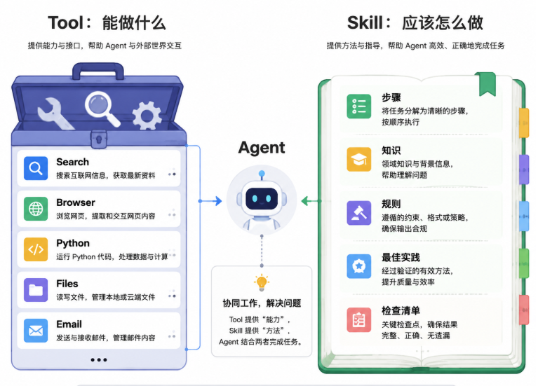
Skill ≠ Tool 的集合那么简单。它还包含，什么时候用哪个 Tool，信息应该怎样判断，遇到异常怎么办。
可以把它理解成：把某类工作的“经验”变成 Agent 可以使用的结构化能力。
到这里，前面那些看起来零散的概念终于可以重新组合起来。我们也可以正式回答：Agent 到底是什么？
Agent
如果要用一句尽可能简单的话来解释：
Agent 是一个能够围绕目标进行判断，并通过工具与外部环境交互，持续采取行动直到完成任务的软件系统。
这里最关键的，不是聊天，LLM，而是目标、决策、行动、反馈。
Agent 的核心并不是一次调用很多 Tool。而是：模型根据当前状态和外部反馈，不断决定下一步行动。这就是其与Workflow最大的区别。
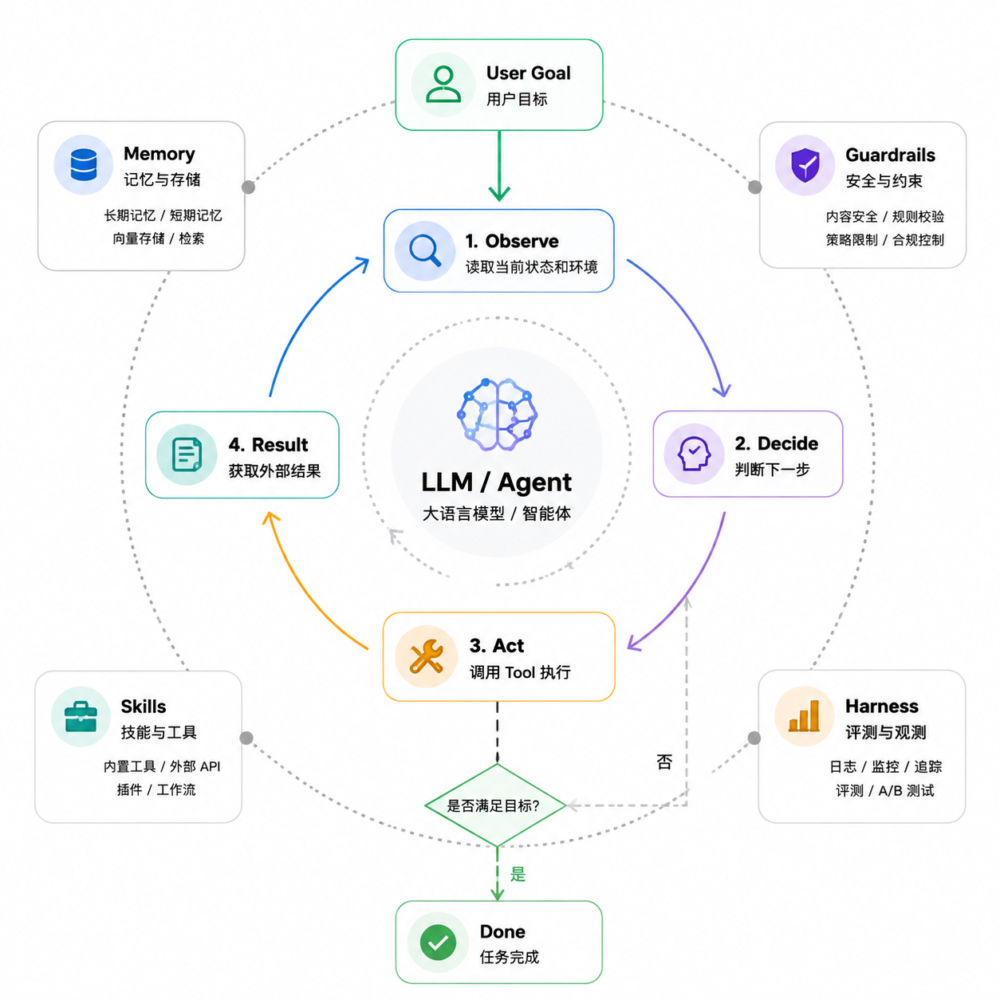
根据此图，我们可以理解一个现代 Agent 到底由什么组成？
- Model ：负责理解、推理、生成和决策。
- Instructions / Prompt ： 告诉 Agent 它是谁、目标是什么、应该遵守哪些规则。
- Tools ： 让它能够真正执行外部动作。
- API / MCP ： 让工具与各种外部系统连接。
- Workflow ： 负责组织不同步骤和任务流程。
- Context ： 提供当前模型调用需要看到的信息。
- State ： 记录任务现在运行到哪里。
- Memory ： 保存以后仍然有价值的信息。
- Skills ： 告诉 Agent 某类任务应该怎样完成。
- Guardrails ： 限制 Agent 可以做什么，以及什么时候必须人工介入。
- Observability ： 记录整个执行过程。
- Evaluation ： 判断最终任务究竟完成得怎么样。
- Harness ： 把上面的许多部分真正组织成一个可以运行的软件环境。
最后，才形成了Agent，我们把我们前面介绍的内容重温了一遍。
这也解释了一个非常重要的现象：Agent 并不是一种新的“超级模型”。同一个 LLM 放进两个不同的 Agent 系统里，最终表现可能完全不同。
一个只拥有搜索工具。
另一个拥有浏览器、代码执行、文件系统、企业数据库、长期 Memory、成熟 Skills、完善 Guardrails 和强大的 Harness。
即使底层使用完全相同的模型，两者能完成的任务也可能存在巨大差距。
因此，可以把今天很多 AI 系统的发展方向概括成：
- 最开始我们关注：模型能不能回答问题？
- 后来开始关注：模型能不能获得正确的外部知识？
- 再后来：模型能不能使用工具？
- 然后进一步变成：它能不能自己决定应该使用什么工具、完成什么步骤，并根据结果继续行动？
现在最困难的问题是，怎样围绕一个模型构建完整的系统，让它能够可靠、安全、可观察地完成真实世界中的任务？这就是 Agent 时代很多工程工作的核心。
在这个时代，我们更关心这个 AI 到底能够替我们完成什么？
实际上还有更深层次的东西，例如Multi-Agent等内容，我们这篇文章就是帮助你初步理解一下现在的AI主流是什么，如果你想知道别的内容，也可以使用AI自己搜索哦
本文完